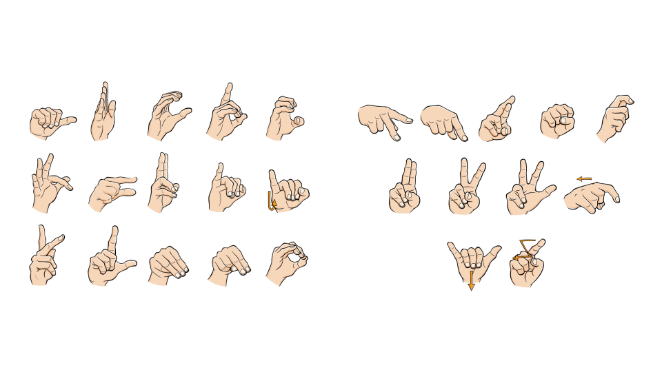

Handgebaarquest
Trainings- en testfoto’s maken
Elke bevestigde foto staat meteen in opruimquest/trainingdata op je pc.
Start de webcam en volg de voorbeelden. De app neemt foto’s per klasse en traint automatisch zodra er genoeg zijn. Hou je gezicht en omstanders buiten beeld.
Webcam staat uit
Kies een klasse en start je webcam.
Maak na de training aparte testfoto’s bij ander licht of met een andere achtergrond. Gebruik trainingdata/test alleen voor je evaluatie.
Bekijk het Vlaamse handalfabet

Bron afbeelding: Vlaams GebarentaalCentrum · Vlaams handalfabet.